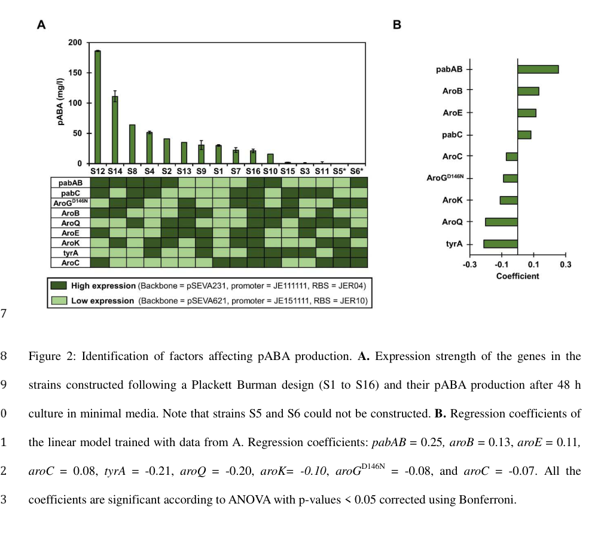

aroQ (PP_3003) encodes a type-II 3-dehydroquinate dehydratase (3-dehydroquinase, EC 4.2.1.10), a cytoplasmic enzyme of the shikimate pathway. It catalyzes the third step of chorismate biosynthesis, the dehydration of 3-dehydroquinate to 3-dehydroshikimate with release of water. Mechanistically, type-II dehydroquinases catalyze a trans (anti) dehydration through an enolate intermediate, in contrast to the Schiff-base mechanism of the unrelated type-I (aroD) enzymes. The protein adopts a flavodoxin-like fold and assembles as a homododecamer (four trimers). As a shikimate-pathway enzyme, it supplies chorismate, the common precursor of the aromatic amino acids (Phe, Tyr, Trp) and other aromatic metabolites such as folate precursors and ubiquinone.
| GO Term | Evidence | Action | Reason |
|---|---|---|---|
|
GO:0003855
3-dehydroquinate dehydratase activity
|
IEA
GO_REF:0000120 |
ACCEPT |
Summary: Core molecular function. The protein belongs to the type-II 3-dehydroquinase family (HAMAP MF_00169, Pfam PF01220) and UniProt records the catalytic activity 3-dehydroquinate = 3-dehydroshikimate + H2O (RHEA:21096, EC 4.2.1.10), with conserved active-site residues (proton acceptor at position 24, proton donor at 102) consistent with the type-II dehydratase mechanism.
Reason: Strongly supported by family/domain assignment, conserved catalytic residues, and the well-established function of bacterial type-II AroQ enzymes; this is the gene's core function.
|
|
GO:0009423
chorismate biosynthetic process
|
IEA
GO_REF:0000120 |
ACCEPT |
Summary: 3-dehydroquinate dehydratase catalyzes step 3 of the 7-step chorismate biosynthesis (shikimate) pathway (UniPathway UPA00053, UER00086). This is the correct biological process context for the enzyme.
Reason: Accurately captures the pathway role; consistent with UniProt PATHWAY annotation and the enzyme's molecular function.
|
|
GO:0019631
quinate catabolic process
|
IEA
GO_REF:0000118 |
MARK AS OVER ANNOTATED |
Summary: This TreeGrafter (PANTHER PTHR21272) annotation propagates a quinate catabolism role. Type-II dehydroquinases occur in two physiological contexts the biosynthetic shikimate-pathway AroQ enzyme and a separate catabolic dehydroquinase (e.g., QuiC/QutE) of the quinate/shikimate utilization pathway. PP_3003 is the biosynthetic AroQ enzyme (HAMAP AroQ rule, aroQ TIGR01088, located within the shikimate-pathway context), not the dedicated quinate catabolic enzyme. While type-II DHQases share the same chemistry, assigning quinate catabolism to this specific protein over-extends the prediction.
Reason: The catabolic process term is an over-propagation from a family-level phylogenetic grouping. The protein's verified role is biosynthetic (chorismate biosynthesis); there is no organism-specific evidence that PP_3003 functions in quinate catabolism, and that role is normally carried by a distinct enzyme.
|
The research report should be a detailed narrative explaining the function, biological processes, and localization of the gene product. Citations should be given for all claims.
You should prioritize authoritative reviews and primary scientific literature when conducting research. You can supplement
this with annotations you find in gene/protein databases, but these can be outdated or inaccurate.
We are specifically interested in the primary function of the gene - for enzymes, what reaction is catalyzed, and what is the substrate specificity? For transporters, what is the substrate? For structural proteins or adapters, what is the broader structural role? For signaling molecules, what is the role in the pathway.
We are interested in where in or outside the cell the gene product carries out its function.
We are also interested in the signaling or biochemical pathways in which the gene functions. We are less interested in broad pleiotropic effects, except where these elucidate the precise role.
Include evidence where possible. We are interested in both experimental evidence as well as inference from structure, evolution, or bioinformatic analysis. Precise studies should be prioritized over high-throughput, where available.
The requested target is UniProt Q88IJ6, annotated as 3-dehydroquinate dehydratase (aka 3-dehydroquinase / type II DHQase), gene aroQ-III (synonym aroQ), ordered locus PP_3003, from Pseudomonas putida strain KT2440. In the literature retrieved for this report, no paper explicitly mentions UniProt Q88IJ6 or locus PP_3003, so direct accession-level linkage could not be independently verified from primary articles in hand. Therefore, gene/protein identity in this report is constrained to: (i) the UniProt-provided identifier set (Q88IJ6; aroQ-III; PP_3003; type-II DHQase family) and (ii) experimental literature that refers to P. putida KT2440 aroQ as a 3-dehydroquinate dehydratase in the shikimate pathway. No conflicting “aroQ-III” usage (different proteins/organisms) was encountered in retrieved texts. (camposmagana2024combinatorialengineeringreveals pages 1-4)
3-dehydroquinate dehydratase (DHQD; also called 3-dehydroquinate dehydratase/3-dehydroquinase in some sources) is a shikimate-pathway enzyme that catalyzes dehydration of 3-dehydroquinate (DHQ) to 3-dehydroshikimate (DHS) and is assigned EC 4.2.1.10. (niraula2025aromaticaminoacids pages 8-10, lee2023structuralandbiochemical pages 1-2)
This step sits mid-pathway and is relevant because the shikimate pathway supplies aromatic building blocks (e.g., for aromatic amino acids and other aromatic metabolites). In microbes, the pathway is cytosolic; thus, the enzyme is expected to function in the cytoplasm (no direct P. putida KT2440 localization experiment was retrieved in the current corpus). (camposmagana2024combinatorialengineeringreveals pages 1-4)
DHQD enzymes are commonly grouped into type I and type II enzymes that perform the same overall DHQ → DHS conversion but differ in mechanism and fold. A recent enzymology/structure paper summarizes that type I DHQDs catalyze dehydration via a covalent imine (Schiff-base) intermediate and are associated with an (α/β)8-fold architecture (often homodimers). In contrast, type II DHQDs (the aroQ family) catalyze anti/trans-dehydration through an enolate-type intermediate, and adopt a flavodoxin-like fold and can assemble as higher oligomers (e.g., dodecamers). (lee2023structuralandbiochemical pages 1-2, niraula2025aromaticaminoacids pages 7-8, niraula2025aromaticaminoacids pages 8-10)
A mechanistic description consistent with an E1CB-like pathway (formation/stabilization of an enolate intermediate, followed by elimination of water) is also described for DHQD in recent computational work, including mention of conserved catalytic residues (e.g., tyrosine for proton abstraction) and stabilization roles for other residues (e.g., asparagine/histidine roles in intermediate stabilization and water elimination). (isa2025identificationofnovel pages 1-2)
Based on enzyme-family consensus and shikimate-pathway placement, aroQ-type enzymes catalyze DHQ → DHS (EC 4.2.1.10). This is the primary function implied for UniProt Q88IJ6 (aroQ-III) given its assignment to the type II DHQase family and the use of P. putida KT2440 aroQ as the 3-dehydroquinate dehydratase gene in pathway engineering literature. (niraula2025aromaticaminoacids pages 8-10, camposmagana2024combinatorialengineeringreveals pages 1-4, lee2023structuralandbiochemical pages 1-2)
Direct enzyme kinetics for the P. putida KT2440 Q88IJ6 protein were not retrieved. However, a 2023 peer-reviewed type II DHQD study provides family-relevant quantitative kinetics and residue-level functional constraints (see §5), illustrating typical DHQD enzymology that supports this functional annotation. (lee2023structuralandbiochemical pages 7-10)
No paper retrieved here experimentally localizes P. putida KT2440 AroQ-III/Q88IJ6. Given its role as a soluble enzyme of central metabolism and typical bacterial shikimate-pathway localization, the most parsimonious functional site is the cytoplasm (inference; not directly evidenced for Q88IJ6 in the retrieved corpus). (camposmagana2024combinatorialengineeringreveals pages 1-4)
A 2023 experimental study in Ralstonia solanacearum (a plant pathogen) demonstrated that two aroQ paralogs (aroQ1/aroQ2) are collectively essential for growth in minimal medium and for robust in planta proliferation; deletion of both caused severe growth defects that were rescued by shikimic acid supplementation, linking the phenotype to disruption of shikimate-pathway intermediate supply. Quantitatively, wild type achieved ~10^9–10^10 CFU g−1 at ~4 days post inoculation (dpi), while the double mutant peaked at ~10^6 CFU g−1 at 4 dpi. (zhang2023functionalcharacterizationof pages 4-6)
While this is not P. putida, it is a strong experimental demonstration that bacterial AroQ enzymes can be key shikimate-pathway nodes whose loss can influence growth and higher-level phenotypes (e.g., virulence-associated secretion systems). (zhang2023functionalcharacterizationof pages 4-6)
A 2024 P. putida KT2440 metabolic engineering preprint explicitly includes aroQ (annotated as 3-dehydroquinate dehydratase) among shikimate-pathway genes whose expression is tuned to optimize production of para-aminobenzoic acid (pABA). (camposmagana2024combinatorialengineeringreveals pages 1-4, camposmagana2024combinatorialengineeringreveals pages 4-7)
Key quantitative findings relevant to functional annotation and pathway control:
- Across combinatorial expression strains, pABA titers ranged from 2.0 ± 3.4 to 186.2 ± 0.32 mg/L in an initial screen, and up to 232.1 ± 17.6 mg/L in a subsequent set. (camposmagana2024combinatorialengineeringreveals pages 7-11, camposmagana2024combinatorialengineeringreveals pages 1-4, camposmagana2024combinatorialengineeringreveals pages 4-7)
- A linear model of factor effects reported aroQ regression coefficient = −0.20 (statistically significant), indicating that high aroQ overexpression tended to reduce pABA titers; the authors interpreted results as consistent with mild aroQ overexpression being desirable, while high overexpression can be detrimental. (camposmagana2024combinatorialengineeringreveals pages 7-11, camposmagana2024combinatorialengineeringreveals media 53a23727)
This provides organism-specific, experimentally grounded evidence that P. putida KT2440 aroQ is an active node in the shikimate pathway whose expression level impacts aromatic-product output, consistent with an in-pathway dehydratase function. (camposmagana2024combinatorialengineeringreveals pages 7-11, camposmagana2024combinatorialengineeringreveals pages 1-4, camposmagana2024combinatorialengineeringreveals media 53a23727)
A 2023 peer-reviewed paper solved two crystal structures of a type II DHQD from Corynebacterium glutamicum (CgDHQD), including a citrate-bound wild-type at 1.80 Å and a DHQ-bound mutant complex at ~2.00–2.03 Å (PDB 8IDR, 8IDU). The enzyme forms a homododecamer (four trimers), consistent with a common type II DHQD oligomerization mode, and the authors used extensive mutagenesis to map essential catalytic residues and quantify kinetic impacts of substitutions near the substrate pocket. (lee2023structuralandbiochemical pages 1-2, lee2023structuralandbiochemical pages 7-10, lee2023structuralandbiochemical pages 2-3)
Although not in P. putida, this is directly relevant to annotating Q88IJ6 as a type II DHQD because it provides contemporary, experimentally validated mechanistic/structural constraints for the enzyme family (fold, oligomeric assembly, active-site residue importance, and kinetic regimes). (lee2023structuralandbiochemical pages 1-2, lee2023structuralandbiochemical pages 7-10)
The 2024 P. putida KT2440 DoE/linear modeling work highlights that optimizing aromatic output (pABA) can require tuning shikimate-pathway nodes, and that aroQ expression level is not monotonically beneficial—overexpression can become counterproductive depending on the pathway context. This is a useful “current understanding” point for functional annotation in applied settings: aroQ can act as a controllable node in engineered aromatic metabolism rather than simply being a static housekeeping enzyme. (camposmagana2024combinatorialengineeringreveals pages 7-11, camposmagana2024combinatorialengineeringreveals media 53a23727)
In the 2023 type II DHQD study (CgDHQD), the authors reported Michaelis–Menten parameters and mutation effects that illustrate typical catalytic performance and structure–function relationships:
- Wild type: Vmax 3.00 μM/s, Km 348.20 μM, kcat 150.19 s−1. (lee2023structuralandbiochemical pages 7-10)
- S103T mutant: Vmax 3.99 μM/s, Km 745.3 μM, kcat 199.67 s−1 (increased turnover but decreased substrate affinity). (lee2023structuralandbiochemical pages 7-10)
- Multiple substitutions at catalytic/substrate-binding residues produced near-complete loss of activity (e.g., N12, R19, Y24, N75, E99, H101, R108; substrate-binding H81, R112). (lee2023structuralandbiochemical pages 7-10)
These data support expert-level inference that type II DHQDs are sensitive to subtle pocket geometry and lid-loop dynamics and can exhibit activity–affinity tradeoffs upon mutation—important for interpreting any future P. putida Q88IJ6 engineering or variant annotation. (lee2023structuralandbiochemical pages 7-10)
As described above, pABA titers up to 232.1 ± 17.6 mg/L were achieved across engineered strain sets, and aroQ carried a negative coefficient (−0.20) in the factor-effect model when set to high expression in that experimental design. (camposmagana2024combinatorialengineeringreveals pages 7-11, camposmagana2024combinatorialengineeringreveals media 53a23727)
The 2024 study demonstrates a concrete application: using statistical Design of Experiments to tune expression of shikimate-pathway genes (including aroQ) in P. putida KT2440 to improve production of pABA, an industrial intermediate. This is a real-world implementation of aroQ functional knowledge in an engineered host. (camposmagana2024combinatorialengineeringreveals pages 7-11, camposmagana2024combinatorialengineeringreveals pages 1-4, camposmagana2024combinatorialengineeringreveals media 53a23727)
Because the shikimate pathway is essential in many bacteria and absent from animals, shikimate-pathway enzymes (including DHQD) are repeatedly explored as antimicrobial targets. While the most recent retrieved inhibitor-focused work here is computational and not 2023–2024, it illustrates that DHQD remains of drug-discovery interest, reporting docking energies and binding free energies for candidate inhibitors as quantitative prioritization metrics. (isa2025identificationofnovel pages 1-2)
The following table consolidates the key, citable evidence used in this report (including quantitative values and URLs).
| Claim/Topic | Key details (include quantitative values) | Organism/system | Source (authors, journal, year) | URL | Evidence strength/notes |
|---|---|---|---|---|---|
| Reaction catalyzed and EC number | 3-Dehydroquinate dehydratase (DHQD/DHQase) catalyzes conversion of 3-dehydroquinate (DHQ) to 3-dehydroshikimate (DHS/3-DHS) in the shikimate pathway; EC 4.2.1.10. This supports annotating aroQ-III / Q88IJ6 as the dehydratase step in aromatic amino acid biosynthesis when family assignment is correct. (niraula2025aromaticaminoacids pages 8-10, lee2023structuralandbiochemical pages 1-2) | General DHQD; inference applied to Pseudomonas putida KT2440 aroQ-III | Niraula et al., BioTech, 2025; Lee et al., Journal of Microbiology and Biotechnology, 2023 | https://doi.org/10.3390/biotech14010006 ; https://doi.org/10.4014/jmb.2305.05018 | Strong for enzyme class/reaction; indirect for Q88IJ6 because retrieved literature did not explicitly map UniProt Q88IJ6/PP_3003, so identity relies partly on supplied UniProt annotation. |
| Type I vs type II mechanistic distinction | Type I DHQDs perform cis/syn-dehydration via covalent imine/Schiff-base chemistry; type II DHQDs perform trans/anti-dehydration via an enolate/E1CB-like mechanism. Recent summaries note type II uses catalytic acid/base chemistry distinct from type I and has only weak covalent intermediates. (niraula2025aromaticaminoacids pages 7-8, lee2023structuralandbiochemical pages 10-11, isa2025identificationofnovel pages 1-2, niraula2025aromaticaminoacids pages 8-10) | General DHQD enzyme families | Niraula et al., BioTech, 2025; Lee et al., J. Microbiol. Biotechnol., 2023; Isa & Kappo, In Silico Pharmacology, 2025 | https://doi.org/10.3390/biotech14010006 ; https://doi.org/10.4014/jmb.2305.05018 ; https://doi.org/10.1007/s40203-024-00298-x | Strong for mechanistic distinction at family level; useful for functional inference that aroQ-family enzymes are type II DHQDs. |
| Structural/oligomeric features of type II DHQD | Type II DHQD adopts a flavodoxin-like α/β fold and forms a homododecamer (four trimers, tetrahedral organization). In Corynebacterium glutamicum, crystal structures were solved as 8IDR (citrate complex, 1.80 Å) and 8IDU (DHQ complex, ~2.00–2.03 Å). Solution mass ~182.3 kDa supported dodecamer formation; intertrimer interface area 723.9 Ų (ΔiG −4.8 kcal/mol) and intratrimer area 686.5 Ų (ΔiG −4.6 kcal/mol). (lee2023structuralandbiochemical pages 1-2, lee2023structuralandbiochemical pages 3-4, lee2023structuralandbiochemical pages 2-3) | Type II DHQD from Corynebacterium glutamicum (structural model for aroQ family) | Lee et al., Journal of Microbiology and Biotechnology, 2023 | https://doi.org/10.4014/jmb.2305.05018 | Strong direct structural evidence for type II DHQD family; informative but not organism-specific to P. putida Q88IJ6. |
| Kinetic parameters and mutation effects from Lee 2023 | Wild-type CgDHQD kinetics: Vmax 3.00 μM/s, Km 348.20 μM, kcat 150.19 s^-1. Variant S103T: Vmax 3.99 μM/s, Km 745.3 μM, kcat 199.67 s^-1 (>10% higher activity but reduced substrate affinity). Mutations of catalytic residues (N12, R19, Y24, N75, E99, H101, R108) and substrate-binding residues (H81, R112) caused near-complete loss/no detectable activity. P105A lowered activity by 60%; P105I and P105V lowered activity by 76% and 58%; I102A and S103A retained 35% and 19% activity. (lee2023structuralandbiochemical pages 7-10) | Corynebacterium glutamicum type II DHQD | Lee et al., Journal of Microbiology and Biotechnology, 2023 | https://doi.org/10.4014/jmb.2305.05018 | Strong biochemical evidence for catalytic mechanism/residue importance in type II DHQDs; extrapolation to Q88IJ6 should be made cautiously unless active-site conservation is verified. |
| Pseudomonas putida KT2440 metabolic engineering involving aroQ | In a combinatorial pABA engineering study, P. putida shikimate-pathway strains produced 2.0 ± 3.4 to 186.2 ± 0.32 mg/L pABA in the initial screen and up to 232.1 ± 17.6 mg/L after optimization. Figure 2 reported aroQ regression coefficient = −0.20, indicating high aroQ overexpression had a statistically significant negative effect; authors concluded mild rather than high aroQ overexpression is preferable. aroQ is annotated there as 3-dehydroquinate dehydratase. (camposmagana2024combinatorialengineeringreveals pages 7-11, camposmagana2024combinatorialengineeringreveals pages 1-4, camposmagana2024combinatorialengineeringreveals pages 4-7, camposmagana2024combinatorialengineeringreveals media 53a23727) | Pseudomonas putida KT2440 | Campos-Magaña et al., bioRxiv, 2024 | https://doi.org/10.1101/2024.06.17.599342 | Moderate evidence: organism-specific and directly relevant to aroQ pathway role, but preprint and not a direct biochemical characterization of Q88IJ6 protein. |
| Ralstonia aroQ1/aroQ2 mutant phenotypes | In Ralstonia solanacearum, deletion of both aroQ1/aroQ2 abolished growth in minimal medium and caused strong in planta attenuation, while single deletions had no obvious defect, showing functional redundancy of AroQ enzymes. Wild type reached about 10^9–10^10 CFU g^-1 at ~4 dpi then dropped to ~10^5–10^6 CFU g^-1 at 6 dpi; the double mutant peaked only at ~10^6 CFU g^-1 at 4 dpi. Shikimic acid supplementation partially/completely rescued growth defects, linking phenotype to shikimate-pathway disruption. (zhang2023functionalcharacterizationof pages 4-6) | Ralstonia solanacearum | Zhang et al., Frontiers in Microbiology, 2023 | https://doi.org/10.3389/fmicb.2023.1186688 | Moderate evidence: not P. putida, but a peer-reviewed, experimentally validated demonstration that bacterial AroQ enzymes are physiologically important for shikimate-pathway function. |
| Recent development: in silico inhibitor metrics for DHQD | A recent anti-tuberculosis in silico study targeting DHQD reported top docking energies of −8.99 to −8.39 kcal/mol versus reference ligand −4.93 kcal/mol; MD simulation RMSDs 1.57–2.34 Å over 50 ns; MM-GBSA binding energies down to −32.70 kcal/mol versus reference −10.62 kcal/mol. A cited Mtb DHQD structure had 1.9 Å resolution. (isa2025identificationofnovel pages 1-2) | Mycobacterium tuberculosis DHQD (drug-target context) | Isa & Kappo, In Silico Pharmacology, 2025 | https://doi.org/10.1007/s40203-024-00298-x | Weak-to-moderate for functional annotation: useful as 2024/2025 development context showing DHQD remains a drug target, but results are computational and not directly about P. putida Q88IJ6. |
Table: This table compiles the most relevant evidence for annotating aroQ-III (UniProt Q88IJ6) as a type II 3-dehydroquinate dehydratase in Pseudomonas putida KT2440. It combines direct organism-level pathway evidence with broader structural, mechanistic, and recent research context for the DHQD family.
Campos-Magaña et al. (bioRxiv 2024) Figure 2 contains (i) pABA titers across strains and (ii) regression coefficients for shikimate-gene expression effects, including aroQ coefficient −0.20. (camposmagana2024combinatorialengineeringreveals media 53a23727)
References
(camposmagana2024combinatorialengineeringreveals pages 1-4): Marco A Campos-Magaña, Sara Moreno-Paz, Vitor AP Martins dos Santos, Luis Garcia-Morales, and Maria Suarez-Diez. Combinatorial engineering reveals shikimate pathway bottlenecks in para-aminobenzoic acid production in pseudomonas putida. bioRxiv, Jun 2024. URL: https://doi.org/10.1101/2024.06.17.599342, doi:10.1101/2024.06.17.599342. This article has 0 citations.
(niraula2025aromaticaminoacids pages 8-10): Archana Niraula, Amir Danesh, Natacha Merindol, Fatma Meddeb-Mouelhi, and Isabel Desgagné-Penix. Aromatic amino acids: exploring microalgae as a potential biofactory. BioTech, 14:6, Jan 2025. URL: https://doi.org/10.3390/biotech14010006, doi:10.3390/biotech14010006. This article has 9 citations.
(lee2023structuralandbiochemical pages 1-2): Chan Hwi Lee, Sangwoo Kim, Hogyun Seo, and Kyung-Jin Kim. Structural and biochemical analysis of 3-dehydroquinate dehydratase from corynebacterium glutamicum. Journal of Microbiology and Biotechnology, 33:1595-1605, Aug 2023. URL: https://doi.org/10.4014/jmb.2305.05018, doi:10.4014/jmb.2305.05018. This article has 2 citations and is from a peer-reviewed journal.
(niraula2025aromaticaminoacids pages 7-8): Archana Niraula, Amir Danesh, Natacha Merindol, Fatma Meddeb-Mouelhi, and Isabel Desgagné-Penix. Aromatic amino acids: exploring microalgae as a potential biofactory. BioTech, 14:6, Jan 2025. URL: https://doi.org/10.3390/biotech14010006, doi:10.3390/biotech14010006. This article has 9 citations.
(isa2025identificationofnovel pages 1-2): Mustafa Alhaji Isa and Abidemi Paul Kappo. Identification of novel 3-dehydroquinate dehydratase (dhqd) inhibitors for anti-tuberculosis activity: insights from virtual screening, molecular docking, and dynamics simulations. In Silico Pharmacology, Jan 2025. URL: https://doi.org/10.1007/s40203-024-00298-x, doi:10.1007/s40203-024-00298-x. This article has 0 citations and is from a peer-reviewed journal.
(lee2023structuralandbiochemical pages 7-10): Chan Hwi Lee, Sangwoo Kim, Hogyun Seo, and Kyung-Jin Kim. Structural and biochemical analysis of 3-dehydroquinate dehydratase from corynebacterium glutamicum. Journal of Microbiology and Biotechnology, 33:1595-1605, Aug 2023. URL: https://doi.org/10.4014/jmb.2305.05018, doi:10.4014/jmb.2305.05018. This article has 2 citations and is from a peer-reviewed journal.
(zhang2023functionalcharacterizationof pages 4-6): Qingshan Zhang, Bofan Wu, Liangliang Han, Duan Yu, Tao Liang, Yan Wang, and Tao Guo. Functional characterization of two 3-dehydroquinases of aroq1 and aroq2 in the shikimate pathway and expression of genes for the type iii secretion system in ralstonia solanacearum. Frontiers in Microbiology, Apr 2023. URL: https://doi.org/10.3389/fmicb.2023.1186688, doi:10.3389/fmicb.2023.1186688. This article has 2 citations and is from a peer-reviewed journal.
(camposmagana2024combinatorialengineeringreveals pages 4-7): Marco A Campos-Magaña, Sara Moreno-Paz, Vitor AP Martins dos Santos, Luis Garcia-Morales, and Maria Suarez-Diez. Combinatorial engineering reveals shikimate pathway bottlenecks in para-aminobenzoic acid production in pseudomonas putida. bioRxiv, Jun 2024. URL: https://doi.org/10.1101/2024.06.17.599342, doi:10.1101/2024.06.17.599342. This article has 0 citations.
(camposmagana2024combinatorialengineeringreveals pages 7-11): Marco A Campos-Magaña, Sara Moreno-Paz, Vitor AP Martins dos Santos, Luis Garcia-Morales, and Maria Suarez-Diez. Combinatorial engineering reveals shikimate pathway bottlenecks in para-aminobenzoic acid production in pseudomonas putida. bioRxiv, Jun 2024. URL: https://doi.org/10.1101/2024.06.17.599342, doi:10.1101/2024.06.17.599342. This article has 0 citations.
(camposmagana2024combinatorialengineeringreveals media 53a23727): Marco A Campos-Magaña, Sara Moreno-Paz, Vitor AP Martins dos Santos, Luis Garcia-Morales, and Maria Suarez-Diez. Combinatorial engineering reveals shikimate pathway bottlenecks in para-aminobenzoic acid production in pseudomonas putida. bioRxiv, Jun 2024. URL: https://doi.org/10.1101/2024.06.17.599342, doi:10.1101/2024.06.17.599342. This article has 0 citations.
(lee2023structuralandbiochemical pages 2-3): Chan Hwi Lee, Sangwoo Kim, Hogyun Seo, and Kyung-Jin Kim. Structural and biochemical analysis of 3-dehydroquinate dehydratase from corynebacterium glutamicum. Journal of Microbiology and Biotechnology, 33:1595-1605, Aug 2023. URL: https://doi.org/10.4014/jmb.2305.05018, doi:10.4014/jmb.2305.05018. This article has 2 citations and is from a peer-reviewed journal.
(lee2023structuralandbiochemical pages 10-11): Chan Hwi Lee, Sangwoo Kim, Hogyun Seo, and Kyung-Jin Kim. Structural and biochemical analysis of 3-dehydroquinate dehydratase from corynebacterium glutamicum. Journal of Microbiology and Biotechnology, 33:1595-1605, Aug 2023. URL: https://doi.org/10.4014/jmb.2305.05018, doi:10.4014/jmb.2305.05018. This article has 2 citations and is from a peer-reviewed journal.
(lee2023structuralandbiochemical pages 3-4): Chan Hwi Lee, Sangwoo Kim, Hogyun Seo, and Kyung-Jin Kim. Structural and biochemical analysis of 3-dehydroquinate dehydratase from corynebacterium glutamicum. Journal of Microbiology and Biotechnology, 33:1595-1605, Aug 2023. URL: https://doi.org/10.4014/jmb.2305.05018, doi:10.4014/jmb.2305.05018. This article has 2 citations and is from a peer-reviewed journal.

id: Q88IJ6
gene_symbol: aroQ
product_type: PROTEIN
status: DRAFT
taxon:
id: NCBITaxon:160488
label: Pseudomonas putida (strain ATCC 47054 / DSM 6125 / CFBP 8728 / NCIMB 11950 / KT2440)
description: aroQ (PP_3003) encodes a type-II 3-dehydroquinate dehydratase (3-dehydroquinase, EC 4.2.1.10), a cytoplasmic enzyme of the shikimate pathway. It catalyzes the third step of chorismate biosynthesis, the dehydration of 3-dehydroquinate to 3-dehydroshikimate with release of water. Mechanistically, type-II dehydroquinases catalyze a trans (anti) dehydration through an enolate intermediate, in contrast to the Schiff-base mechanism of the unrelated type-I (aroD) enzymes. The protein adopts a flavodoxin-like fold and assembles as a homododecamer (four trimers). As a shikimate-pathway enzyme, it supplies chorismate, the common precursor of the aromatic amino acids (Phe, Tyr, Trp) and other aromatic metabolites such as folate precursors and ubiquinone.
existing_annotations:
- term:
id: GO:0003855
label: 3-dehydroquinate dehydratase activity
evidence_type: IEA
original_reference_id: GO_REF:0000120
qualifier: enables
review:
summary: Core molecular function. The protein belongs to the type-II 3-dehydroquinase family (HAMAP MF_00169, Pfam PF01220) and UniProt records the catalytic activity 3-dehydroquinate = 3-dehydroshikimate + H2O (RHEA:21096, EC 4.2.1.10), with conserved active-site residues (proton acceptor at position 24, proton donor at 102) consistent with the type-II dehydratase mechanism.
action: ACCEPT
reason: Strongly supported by family/domain assignment, conserved catalytic residues, and the well-established function of bacterial type-II AroQ enzymes; this is the gene's core function.
- term:
id: GO:0009423
label: chorismate biosynthetic process
evidence_type: IEA
original_reference_id: GO_REF:0000120
qualifier: involved_in
review:
summary: 3-dehydroquinate dehydratase catalyzes step 3 of the 7-step chorismate biosynthesis (shikimate) pathway (UniPathway UPA00053, UER00086). This is the correct biological process context for the enzyme.
action: ACCEPT
reason: Accurately captures the pathway role; consistent with UniProt PATHWAY annotation and the enzyme's molecular function.
- term:
id: GO:0019631
label: quinate catabolic process
evidence_type: IEA
original_reference_id: GO_REF:0000118
qualifier: involved_in
review:
summary: This TreeGrafter (PANTHER PTHR21272) annotation propagates a quinate catabolism role. Type-II dehydroquinases occur in two physiological contexts the biosynthetic shikimate-pathway AroQ enzyme and a separate catabolic dehydroquinase (e.g., QuiC/QutE) of the quinate/shikimate utilization pathway. PP_3003 is the biosynthetic AroQ enzyme (HAMAP AroQ rule, aroQ TIGR01088, located within the shikimate-pathway context), not the dedicated quinate catabolic enzyme. While type-II DHQases share the same chemistry, assigning quinate catabolism to this specific protein over-extends the prediction.
action: MARK_AS_OVER_ANNOTATED
reason: The catabolic process term is an over-propagation from a family-level phylogenetic grouping. The protein's verified role is biosynthetic (chorismate biosynthesis); there is no organism-specific evidence that PP_3003 functions in quinate catabolism, and that role is normally carried by a distinct enzyme.
core_functions:
- description: Catalyzes the third step of the shikimate (chorismate biosynthesis) pathway, the trans-dehydration of 3-dehydroquinate to 3-dehydroshikimate, as a type-II 3-dehydroquinate dehydratase.
supported_by:
- reference_id: GO_REF:0000120
supporting_text: 3-dehydroquinate = 3-dehydroshikimate + H2O (RHEA:21096, EC 4.2.1.10); type-II 3-dehydroquinase family (HAMAP MF_00169), chorismate biosynthesis step 3/7 (UniPathway UPA00053).
molecular_function:
id: GO:0003855
label: 3-dehydroquinate dehydratase activity
directly_involved_in:
- id: GO:0009423
label: chorismate biosynthetic process
references:
- id: GO_REF:0000118
title: TreeGrafter-generated GO annotations
findings: []
- id: GO_REF:0000120
title: Combined Automated Annotation using Multiple IEA Methods
findings: []
- id: PMID:12534463
title: Complete genome sequence and comparative analysis of the metabolically versatile Pseudomonas putida KT2440
findings: []
reference_review:
relevance: MEDIUM
correctness: VERIFIED
review_notes: KT2440 genome reference (Nelson et al. 2002, Environ Microbiol) establishing the locus/gene assignment.
{kind=link}